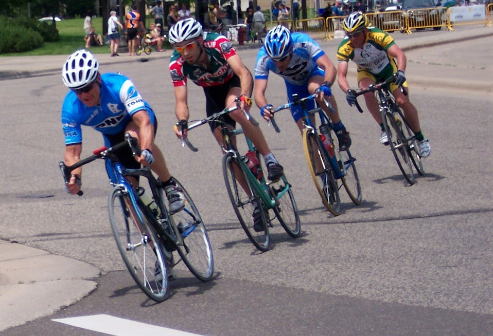
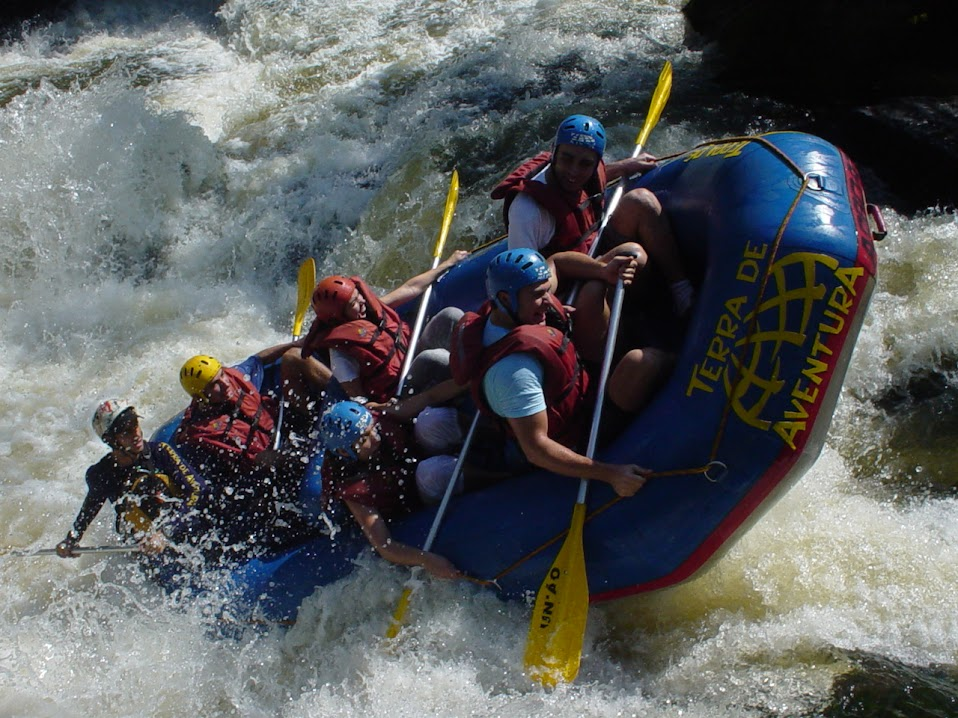
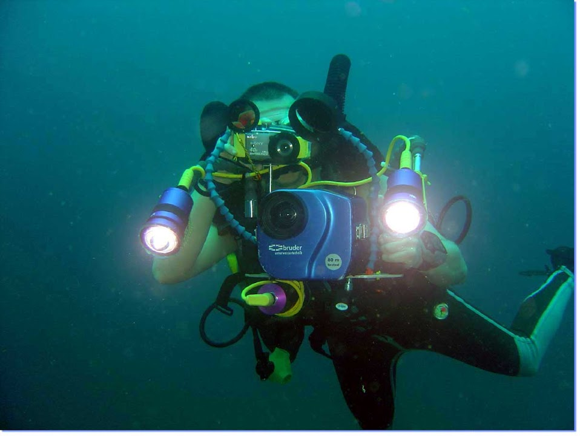

Highlights of the mountaineering cycling tour includes: a two-day mountaineering skills refresher course, breathtaking views of the majestic Alaskan wilderness, a victory feast of fresh Alaskan King Crab or Salmon, and a guided tour of Fairbanks.

Highlights of the river tours include: a hike from the South Rim down to the Colorado River, traversing more than 27 rapid fields, an overnight stay at Phantom Ranch, hikes to Elves Chasm and Keyhole Arch; and a mule-train ride back up to the South Rim.

Highlights of this 17-night, fully escorted, scuba diving tour include: three nights in Sydney, an excursion to Ayers Rock, two nights aboard the luxurious diving-platform ship Nemo, and oceanography lectures sponsored by the University of New South Wales.